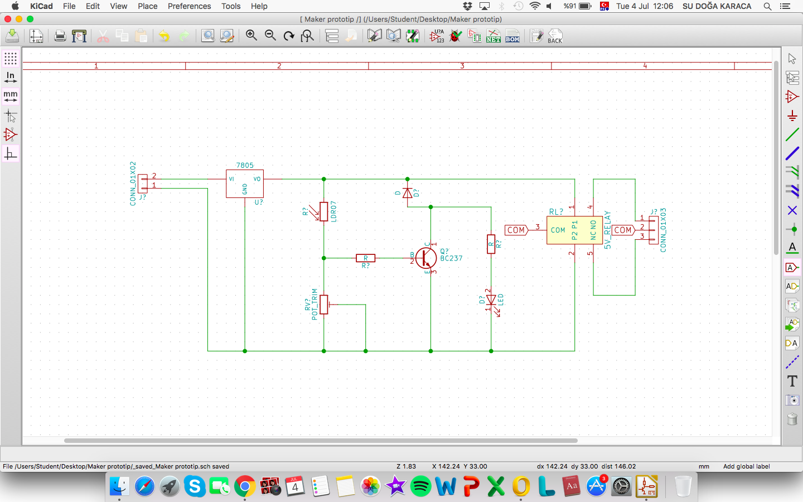

Hızlı başlayan günümüz yeni öğrenilen devre elemanları ile başladı. Daha sonradan KiCad uygulaması ile kartımızın prototiplerini çizmeyle başladık. Bu program biraz zaman aldı çünkü yapılması gerekn bir sürü adım ve ciddiyetle takip edilmesi gereken yönergeler vardı. Duyduğuma göre çoğu mühendis bunu yapamadan mezun oluyormuş. Şanslı mıyız ne?

"Eğer bu çizgiyi de tutturamazsam ipin ucu kaçacak sanırım '_' "
Ama her şey -çizim ve kart baskısı- sorunsuz gitti. Bizim için önceden hazırlanmış kartları ütüledik, yolduk, asitledik, cifledik, deldik ve lehimledik. Ben sanırım biraz kızlı davrandım çünkü işim erken bitti ;) Aitleme ve kesme sırasında bolca bakır solumuş olabiliriz. Sanırım bu da bizde maker-kafası yaptı. Öyle olacak ki ders 15.00da bitmesine rağmen İnovasyon Merkezinden çıkışımız 16.21di.

Hep bir sorun çıkar zaten, pff!
Ne yazıktır ki, güzel güzel her aşamadan hızla geçen kartım deneme aşamasında nazlı çıktı ve çalışmadı. Piller bağlandığında relayden ses vermesine, led ve lehimler düzgün olmasına rağmen çalışmadı. En sonunda sorunun sensörde olduğuna karar verdik. Artık yarın başka bir kartı çalıştırmayı deneyeceğim. Pilim neyseki hala bende :D Olsundu kartım, asitler ve bakırla çok güzel bir gündü !
.jpeg)